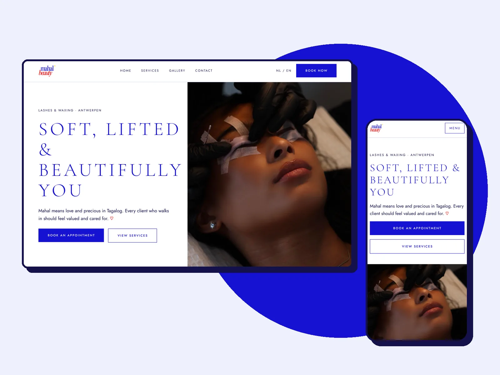
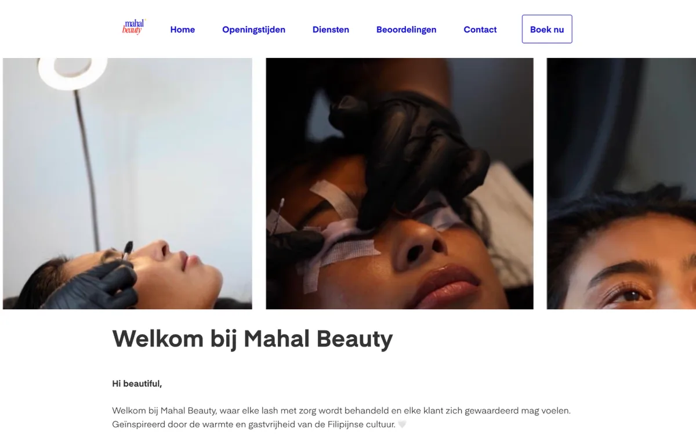
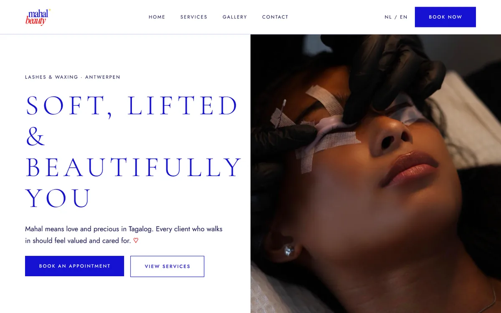
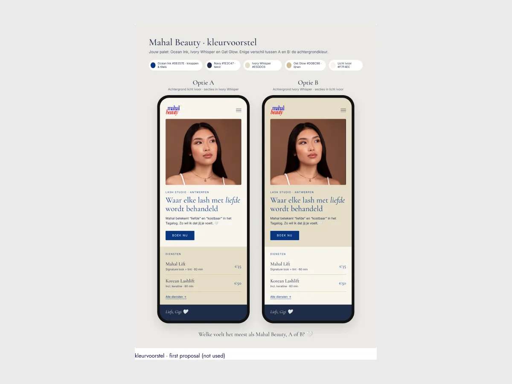
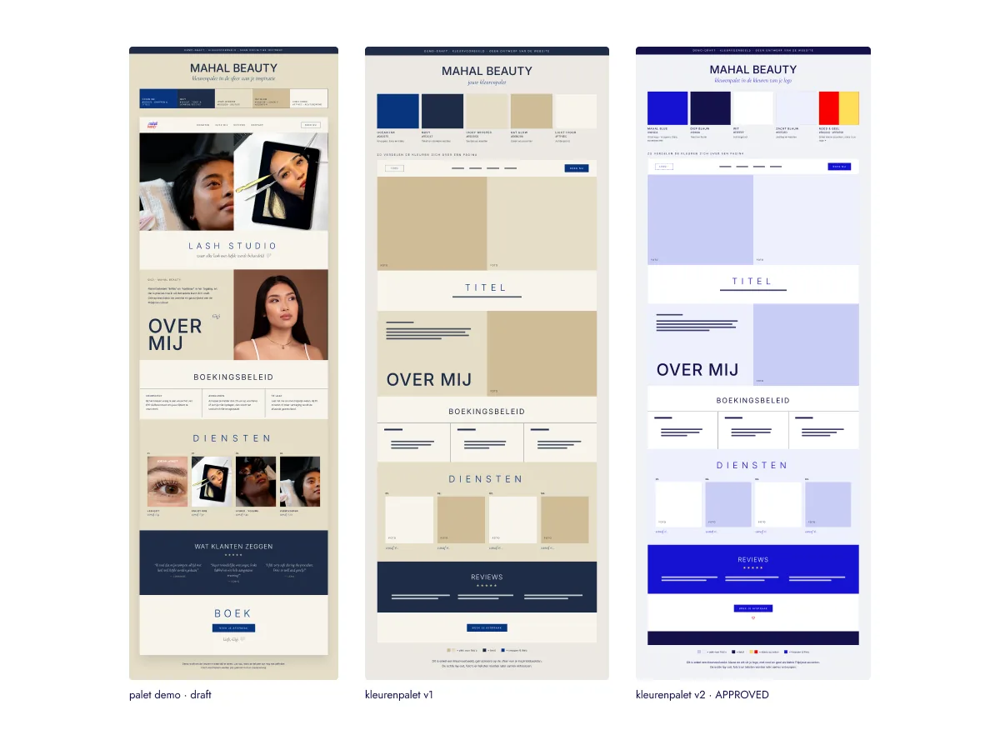
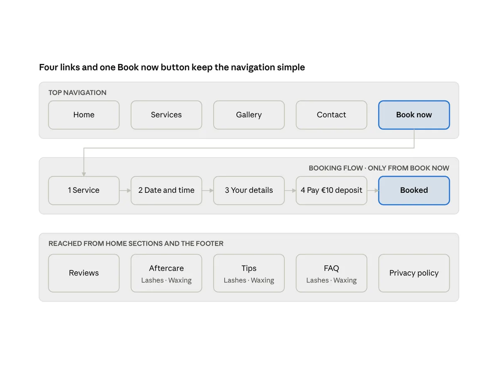
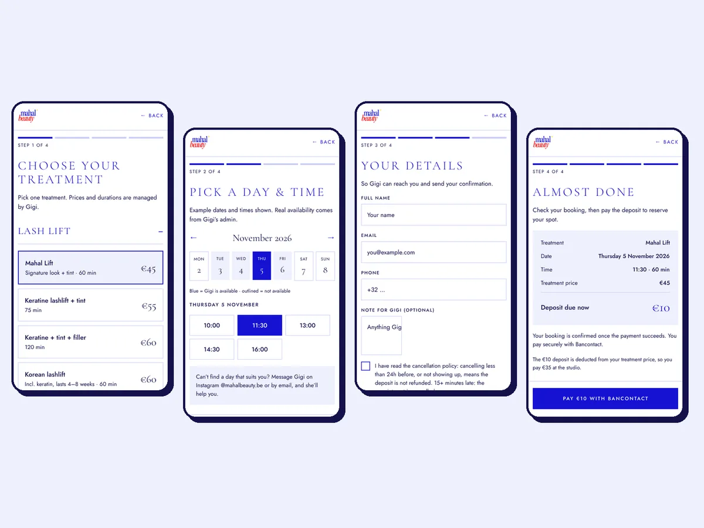
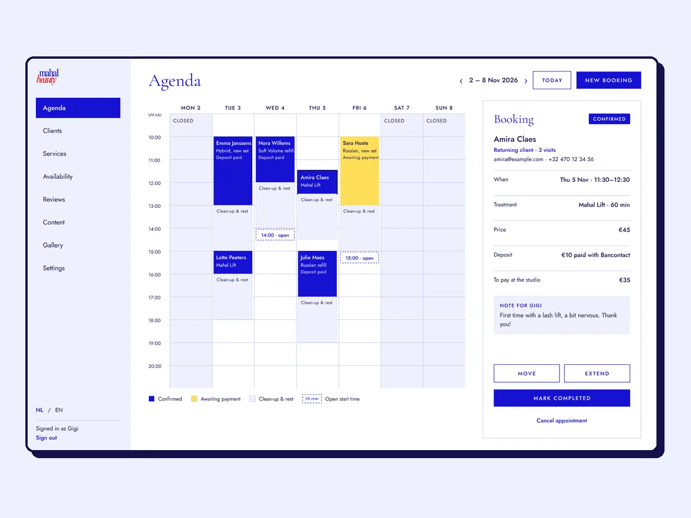
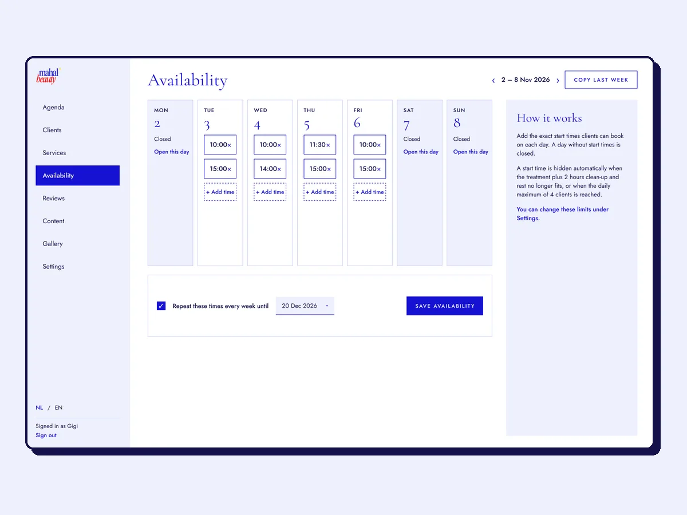
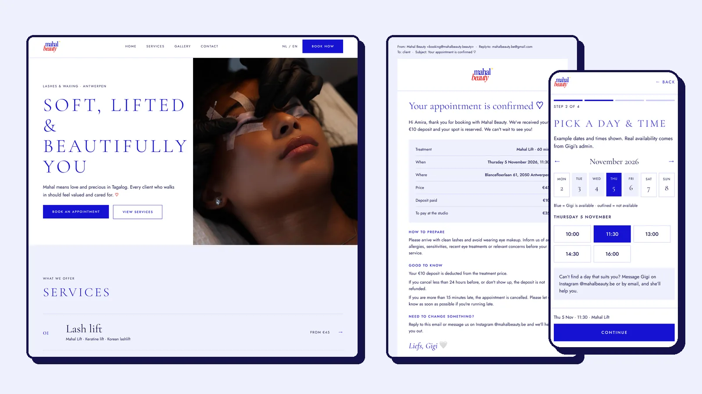

UI/UX · Web design · Client project
Mahal Beauty
A website of her own for Mahal Beauty, a one-woman lash and waxing studio in Antwerpen: her brand, her words, and booking in a few taps.
Design approved by the client · build in progress

- Role
- Sole designer & developer: requirements, UX, UI, client contact
- Tools
- Figma, Canva (client's logo), Claude as AI partner
- Duration
- October 2026 – ongoing
- Team
- Solo, with the studio owner Glency as client
01 Problem
Glency's studio lived on third-party platforms (Salonized and Treatwell), which looked generic and did not reflect her brand. She wanted a site of her own that replaces both, with its own booking, emails and reviews, while still feeling as easy as the tool she already knew. And the design had to serve two very different users:
-
Clients
Mostly arrive from Instagram, on their phone. They need to understand the services and prices quickly, trust the studio, and book in a few taps.
-
Glency
Works alone, isn't technical and does her admin on her laptop. She needs a calm agenda like Salonized's, simpler where possible, in Dutch.
02 Why the design changed


-
It looked like everyone else
A platform template with the platform's fonts and layout. Nothing on the page said "Mahal Beauty" except the small logo.
-
It didn't feel like her brand
"Mahal" means love and precious in Tagalog. The brand draws on the warmth of Filipino hospitality, and every client should feel valued. That had to show in the colours, the type and the tone.
-
She wanted her own booking
Booking, emails and reviews all ran through other platforms. A site of her own lets clients book, pay a €10 deposit and leave a review in one place.
I started from what already worked for Glency rather than a blank page. Her Salonized page gave me the services, prices and policies, and she wrote the aftercare, tips and FAQ texts herself, so the site speaks in her own words. The rest came from short question rounds by chat and a screen recording of how she sets her hours. Each answer became a design decision.
03 Process
-

A first palette that wasn't her
My first proposal was navy, ivory and oat, based on the luxury lash sites Glency liked. It looked calm and premium, but it did not look like her.
-

The turning point: her logo
Glency wanted the site to match her logo and Instagram: cobalt blue and white with red and yellow, colours that echo the Philippine flag. Four rounds later, v2 was approved: blue and white lead, red and yellow are tiny accents. I made the mock-ups with colour blocks so she judged colours, not content, and checked every text colour against WCAG AA.
-

A simpler navigation
The only change Glency asked for: I cut the menu down to four links and one "Book now" button. Booking starts only from there, so there is one clear path instead of booking links under every service.
-

Booking in four taps
Service, date and time, details, payment, designed mobile-first. The calendar only shows times that fit around Glency's clean-up and rest, the deposit is explained up front, and an optional "Note for Glency" lets nervous first-timers say hi.
-

Admin: from phone to laptop
My first admin screens were for a phone. When Glency told me she does all her admin on her laptop, I redesigned it around a week calendar like the one she knows from Salonized, with the clean-up and rest time drawn in.
-

"Just put a timeslot"
Watching her Salonized screen recording changed availability from opening hours to fixed start times she types per day, with "Copy last week". For clients who book by Instagram DM, she can create a payment link to paste in the chat.
04 Outcome
A client-approved design system and 59 hi-fi screens in Figma: the public site on mobile and desktop, the booking flow, a laptop admin in Dutch and English, and seven emails that all end with "Liefs, Glency".

What I learned
- The client's brand beats my taste. My first palette was tasteful, but it wasn't Glency. Her own colours make the site instantly recognisable to her clients.
- Watch how people work. One screen recording told me more about availability than any question did.
- Ask where the work happens. Designing the admin for a phone first cost me a round of screens. One question about her laptop would have saved it.
- Placeholders are honest. Marking missing content clearly kept the design moving without inventing business details.
Photos are Glency's own; the clients in them gave permission. Names and bookings in the screens are fictional example data.